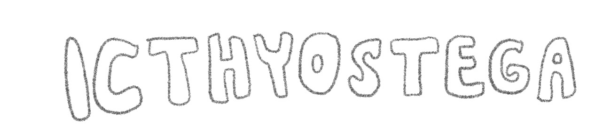
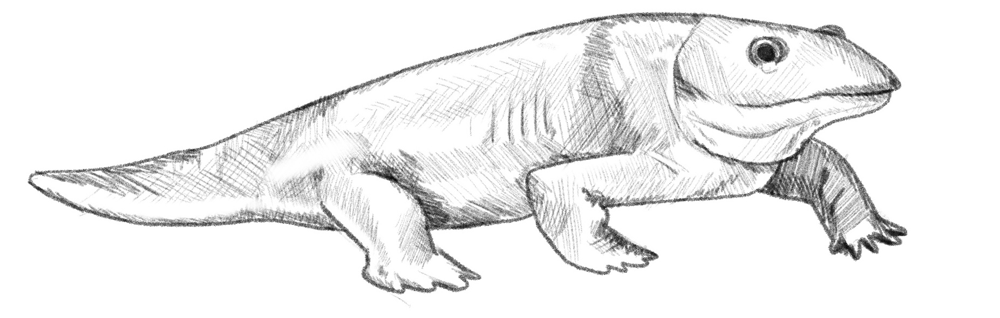
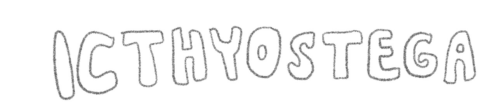
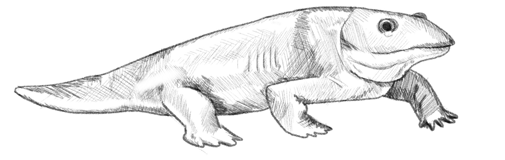

Icthyostega had lungs protected by a thick and overlapped rib cage, as well as a stronger spine, allowing it to spend time on land without being crushed by its weight. It lived during the Devonian period. Icthyostega was able to survive on land, but still likely spent more time in water, especially as an adult. There have been a few fossils of this creature found in Greenland, but never of its forelimbs, restricting scientists understanding. Its “arms” are thought to have been larger in size than its “legs”, allowing it to climb onto land.